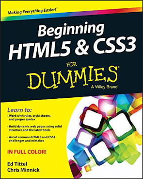
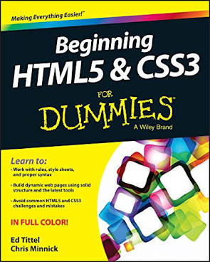
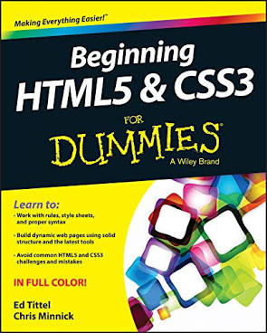

Resources I am currently using
- Free Code Camp
- Code Academy
- HTML for beginners Book
- HTML and CSS for Dummies
 

Hi everyone! For privacy I am going to use my internet name Tech Nerd! First of all, thank you to everyone who decided to check out my first ever HTML and CSS web page as well as my first ever blog post. Well, here it goes! About a year ago while studying business and economics in college I got very intrigued with computer science. Being 22 at the time multiple people including friends, professors, and software engineers I met online told me it was to late to begin to learn how to code at my age and I was about 5 years to late. For a few months I listened to this and decided to not even dip my toes in the water. Finally, after realizing I was not going to let others dictate my life, I wrote some goals and began studying. It has only been about two weeks of studying. Balancing my two jobs and school I have only had a few hours a day to bunker down and study. But after completing basic HTML and CSS I decided I wanted to start working on my own blog post to share my journey, the resources I am currently using and all else that happens along the journey.

Throughout learning to code thus far I have definitely encountered my fair share of problems and I know there will be more to come in the future. In the mere two weeks of studying HTML and CSS
so far the most major challenge I have faced is myself. After a few hours of studying I open my own code editor and practice what I have learned and that is when I really realize how far I have to
go and although I felt like I learned so much when I look at my web page, I know I haven't. I stopped self critiquing myself so much and stopped comparing myself with the progress of others and focused
on my achievments only. Every little success I had figuring out one of the challenges or learning something, even something as simple as centering text, gives me even more motivation to continue to learn and
excel. Something that I know for sure is I would have never known how to do any of this if I had never tried.
The second major challenge I faced is making sure I am understanding the material and not just copying and pasting the code into the editor. A lot of the free coding websites I listed above
make it very easy to copy and paste the answer and change a few values, doing this is definitely scary as you can feel like you are learning but when you go to develop your own web page you will struggle.